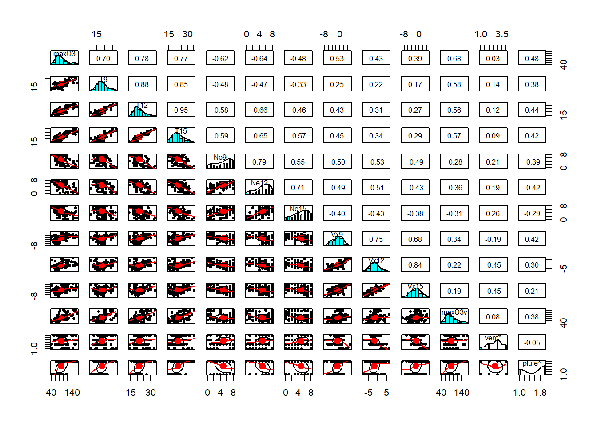
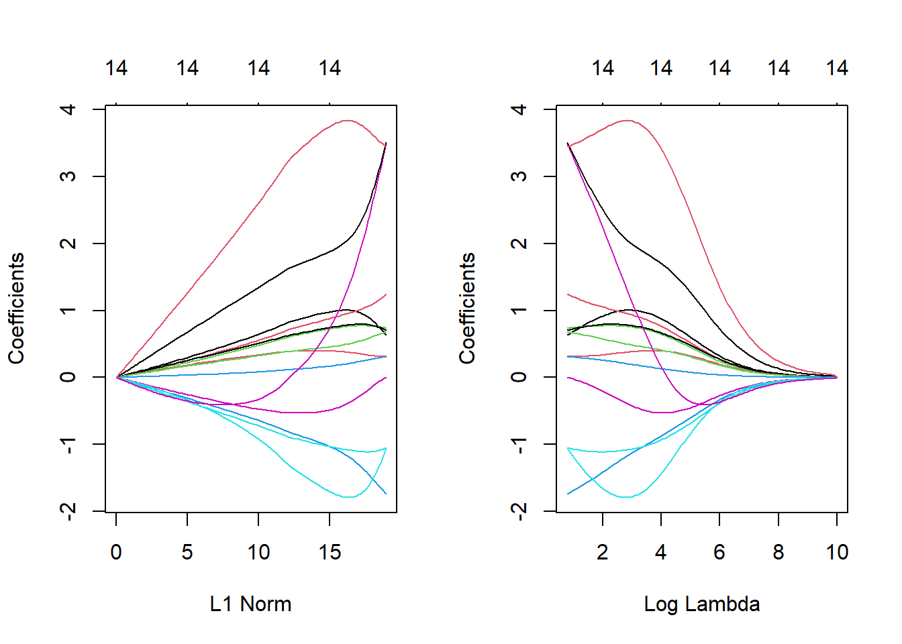
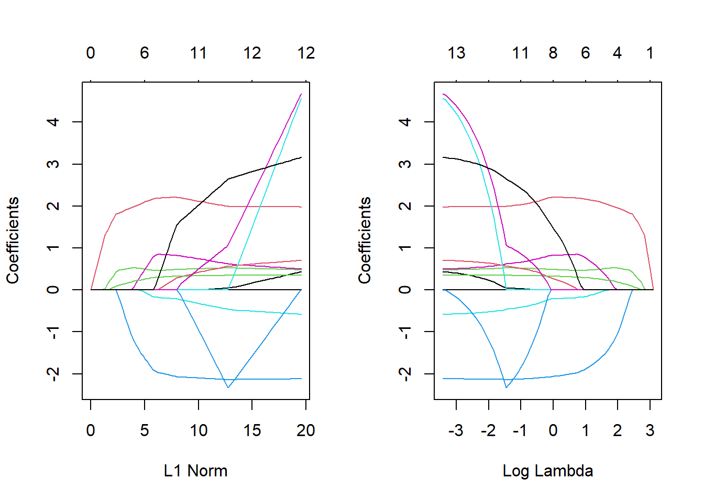
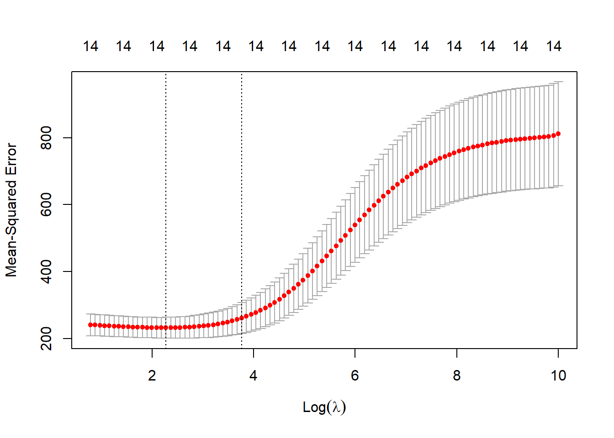
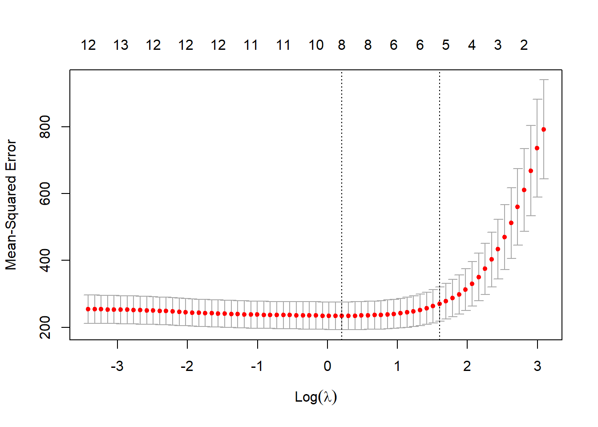

Show the code
# ozone <- read.csv("~/1.Workspace/Master_IS/M2/X3MS020_Statistique_en_grande_dimension/ozone.txt", sep="")
ozone <-read.table("https://r-stat-sc-donnees.github.io/ozone.txt", header=TRUE)
head(ozone) maxO3 T9 T12 T15 Ne9 Ne12 Ne15 Vx9 Vx12 Vx15 maxO3v
20010601 87 15.6 18.5 18.4 4 4 8 0.6946 -1.7101 -0.6946 84
20010602 82 17.0 18.4 17.7 5 5 7 -4.3301 -4.0000 -3.0000 87
20010603 92 15.3 17.6 19.5 2 5 4 2.9544 1.8794 0.5209 82
20010604 114 16.2 19.7 22.5 1 1 0 0.9848 0.3473 -0.1736 92
20010605 94 17.4 20.5 20.4 8 8 7 -0.5000 -2.9544 -4.3301 114
20010606 80 17.7 19.8 18.3 6 6 7 -5.6382 -5.0000 -6.0000 94
vent pluie
20010601 Nord Sec
20010602 Nord Sec
20010603 Est Sec
20010604 Nord Sec
20010605 Ouest Sec
20010606 Ouest PluieShow the code
summary(ozone) maxO3 T9 T12 T15
Min. : 42.00 Min. :11.30 Min. :14.00 Min. :14.90
1st Qu.: 70.75 1st Qu.:16.20 1st Qu.:18.60 1st Qu.:19.27
Median : 81.50 Median :17.80 Median :20.55 Median :22.05
Mean : 90.30 Mean :18.36 Mean :21.53 Mean :22.63
3rd Qu.:106.00 3rd Qu.:19.93 3rd Qu.:23.55 3rd Qu.:25.40
Max. :166.00 Max. :27.00 Max. :33.50 Max. :35.50
Ne9 Ne12 Ne15 Vx9
Min. :0.000 Min. :0.000 Min. :0.00 Min. :-7.8785
1st Qu.:3.000 1st Qu.:4.000 1st Qu.:3.00 1st Qu.:-3.2765
Median :6.000 Median :5.000 Median :5.00 Median :-0.8660
Mean :4.929 Mean :5.018 Mean :4.83 Mean :-1.2143
3rd Qu.:7.000 3rd Qu.:7.000 3rd Qu.:7.00 3rd Qu.: 0.6946
Max. :8.000 Max. :8.000 Max. :8.00 Max. : 5.1962
Vx12 Vx15 maxO3v vent
Min. :-7.878 Min. :-9.000 Min. : 42.00 Length:112
1st Qu.:-3.565 1st Qu.:-3.939 1st Qu.: 71.00 Class :character
Median :-1.879 Median :-1.550 Median : 82.50 Mode :character
Mean :-1.611 Mean :-1.691 Mean : 90.57
3rd Qu.: 0.000 3rd Qu.: 0.000 3rd Qu.:106.00
Max. : 6.578 Max. : 5.000 Max. :166.00
pluie
Length:112
Class :character
Mode :character
Show the code
library(psych)Warning: le package 'psych' a été compilé avec la version R 4.2.3Show the code
pairs.panels(ozone)
Show the code
ozone.X <- model.matrix(maxO3~.,data=ozone)[,-1] # codage des variables qualitatives avec la fonction model.matrix
ozone.Y <- ozone$maxO3
library(glmnet)Warning: le package 'glmnet' a été compilé avec la version R 4.2.3Le chargement a nécessité le package : MatrixWarning: le package 'Matrix' a été compilé avec la version R 4.2.3Loaded glmnet 4.1-8Show the code
mod.R <- glmnet(ozone.X, ozone.Y, alpha=0) ## Ridge
mod.L <- glmnet(ozone.X, ozone.Y, alpha=1) ## Lasso
# Par défaut standardize = TRUE, intercept = TRUE
## Analyse Modèle Ridge
mod.R$lambda |> head()[1] 22007.27 20052.20 18270.82 16647.69 15168.76 13821.21Show the code
# When alpha=0, the largest lambda reported does not quite give
# the zero coefficients reported (lambda=inf would in principle).
# Instead, the largest lambda for alpha=0.001 is used, and the sequence
# of lambda values is derived from this.
mod.R$beta[,1] T9 T12 T15 Ne9 Ne12
6.376767e-36 5.523924e-36 4.867402e-36 -6.821464e-36 -7.994984e-36
Ne15 Vx9 Vx12 Vx15 maxO3v
-5.839057e-36 5.706014e-36 4.387350e-36 3.970583e-36 6.892387e-37
ventNord ventOuest ventSud pluieSec
-5.830507e-36 -1.022483e-35 1.519222e-35 2.772246e-35 Show the code
# Our coefficients
par(mfrow=c(1,2))
plot(mod.R,label=TRUE)
# lecture du graphe :
# - chaque courbe c'est lévolution d'un beta
# - à droite on à les valeurs de beta MCO
# - à gauche c'est quand lambda augmente, on tend vers 0
plot(mod.R,xvar="lambda",label=TRUE)
Show the code
par(mfrow=c(1,1))
## Analyse Modèle Lasso
mod.L$lambda |> head()[1] 22.00727 20.05220 18.27082 16.64769 15.16876 13.82121Show the code
mod.L$beta[,1] T9 T12 T15 Ne9 Ne12 Ne15 Vx9 Vx12
0 0 0 0 0 0 0 0
Vx15 maxO3v ventNord ventOuest ventSud pluieSec
0 0 0 0 0 0 Show the code
par(mfrow=c(1,2))
plot(mod.L,label=TRUE)
plot(mod.L,xvar="lambda",label=TRUE)
Show the code
par(mfrow=c(1,1))
####
# Sélection des paramètres de régularisation ####
ridgeCV <- cv.glmnet(ozone.X, ozone.Y, alpha=0)
plot(ridgeCV)
Show the code
# abline(v=log(ridgeCV$lambda.1se), col='red')
# abline(v=log(ridgeCV$lambda.min), col='red')
# On visualise les erreurs quadratiques calculées
# par validation croisée 10 blocs en fonction de lambda (échelle log)
# Deux traites verticaux :
# - celui de gauche correspond à la valeur de `lambda`
# qui minimise l’erreur quadratique ;
#
# - celui de droite correspond à la plus grande valeur de `lambda`
# telle que l’erreur ne dépasse pas
# l’erreur minimale + 1 écart-type estimé de cette erreur.
# D’un point de vu pratique, cela signifie que l’utilisateur
# peut choisir n’importe quelle valeur de lambda entre
# les deux traits verticaux. Si on veut diminuer
# la complexité du modèle on choisira la valeur de droite.
# On peut obtenir ces deux valeurs
ridgeCV$lambda.min[1] 9.750588Show the code
ridgeCV$lambda.1se[1] 43.20116Show the code
lassoCV <- cv.glmnet(ozone.X, ozone.Y, alpha=1)
plot(lassoCV)
Show the code
# abline(v=log(lassoCV$lambda.1se), col='red')
# abline(v=log(lassoCV$lambda.min), col='red')
lassoCV$lambda.min[1] 1.230385Show the code
lassoCV$lambda.1se[1] 4.967084Show the code
####
# Prédiction de la variable cible pour de nouveaux individus ####
# Première approche :
# réajuster le modèle sur toutes les données pour la valeur
# de lambda sélectionnée.
# Cette étape est en réalité déjà effectuée par la fonction cv.glmnet.
# Il suffit par conséquent d’appliquer la fonction predict à l’objet
# obtenu avec cv.glmnet en spécifiant la valeur de lambda souhaitée.
predict(ridgeCV, newx = ozone.X[50:51,],s="lambda.min") lambda.min
20010723 90.10981
20010724 96.74374Show the code
predict(ridgeCV, newx = ozone.X[50:51,],s="lambda.1se") lambda.1se
20010723 93.23058
20010724 96.21185Show the code
predict(lassoCV, newx = ozone.X[50:51,],s="lambda.min") lambda.min
20010723 87.18235
20010724 98.23752Show the code
predict(lassoCV, newx = ozone.X[50:51,],s="lambda.1se") lambda.1se
20010723 87.44713
20010724 95.61077Show the code
# Comparaison performances MCO, ridge et lasso ####
# validation croisée pour comparer les performances des estimateurs
# MCO, ridge et lasso.
# On pourra utiliser les données ozone_complet.txt
# qui contiennent plus d’individus et de variables.
# ozone1 <- read.csv("~/1. Workspace/Master IS/M2/X3MS020 Statistique en grande dimension/ozone_complet.txt", sep=";") |> na.omit()
ozone1 <-read.table("https://r-stat-sc-donnees.github.io/ozone.txt", header=TRUE) |> na.omit()
ozone1.X <- model.matrix(maxO3~., data=ozone1)[,-1]
ozone1.Y <- ozone1$maxO3
library(tibble)Warning: le package 'tibble' a été compilé avec la version R 4.2.3Show the code
library(dplyr)Warning: le package 'dplyr' a été compilé avec la version R 4.2.3
Attachement du package : 'dplyr'Les objets suivants sont masqués depuis 'package:stats':
filter, lagLes objets suivants sont masqués depuis 'package:base':
intersect, setdiff, setequal, unionShow the code
cv.ridge.lasso <- function(data,form){
set.seed(1234)
data.X <- model.matrix(form,data=data)[,-1]
data.Y <- data$maxO3
blocs <- caret::createFolds(1:nrow(data),k=10)
prev <- matrix(0,ncol=3,nrow=nrow(data)) |> as.data.frame()
names(prev) <- c("lin","ridge","lasso")
for (k in 1:10){
app <- data[-blocs[[k]],]
test <- data[blocs[[k]],]
app.X <- data.X[-blocs[[k]],]
app.Y <- data.Y[-blocs[[k]]]
test.X <- data.X[blocs[[k]],]
test.Y <- data.Y[blocs[[k]]]
ridge <- cv.glmnet(app.X,app.Y,alpha=0)
lasso <- cv.glmnet(app.X,app.Y,alpha=1)
lin <- lm(form,data=app)
prev[blocs[[k]],] <- tibble(lin=predict(lin,newdata=test),
ridge=as.vector(predict(ridge,newx=test.X)),
lasso=as.vector(predict(lasso,newx=test.X)))
}
err <- prev |> mutate(obs=data$maxO3) |> summarise_at(1:3,~mean((obs-.)^2))
return(err)
}
cv.ridge.lasso(ozone1, form=formula(maxO3~.)) lin ridge lasso
1 247.4596 271.8111 272.9936Show the code
# On remarque que les approches régularisées
# n’apportent rien par rapport aux estimateurs MCO ici.
# Ceci peut s’expliquer par le fait que le nombre de variables
# n’est pas très important.
# Considérons toutes les interactions d’ordre 2
cv.ridge.lasso(ozone1, form=formula(maxO3~.^2))Warning in predict.lm(lin, newdata = test): les prédictions venant d'un modèle
de rang faible peuvent être trompeusesWarning in predict.lm(lin, newdata = test): les prédictions venant d'un modèle
de rang faible peuvent être trompeuses
Warning in predict.lm(lin, newdata = test): les prédictions venant d'un modèle
de rang faible peuvent être trompeuses
Warning in predict.lm(lin, newdata = test): les prédictions venant d'un modèle
de rang faible peuvent être trompeuses
Warning in predict.lm(lin, newdata = test): les prédictions venant d'un modèle
de rang faible peuvent être trompeuses
Warning in predict.lm(lin, newdata = test): les prédictions venant d'un modèle
de rang faible peuvent être trompeuses
Warning in predict.lm(lin, newdata = test): les prédictions venant d'un modèle
de rang faible peuvent être trompeuses
Warning in predict.lm(lin, newdata = test): les prédictions venant d'un modèle
de rang faible peuvent être trompeuses
Warning in predict.lm(lin, newdata = test): les prédictions venant d'un modèle
de rang faible peuvent être trompeuses
Warning in predict.lm(lin, newdata = test): les prédictions venant d'un modèle
de rang faible peuvent être trompeuses lin ridge lasso
1 196622.7 335.9692 268.1647Show the code
# Les méthodes régularisées permettent ici de diminuer
# les erreurs quadratiques de manière intéressante.
# Cela vient certainement du fait du nombre de
# variables explicatives qui est beaucoup plus
# important lorsqu’on prend en compte toutes
# les interactions d’ordre 2, nous en avons en effet 253 :
ozone2.X <- model.matrix(maxO3~.^2,data=ozone1)[,-1]
dim(ozone2.X)[1] 112 102